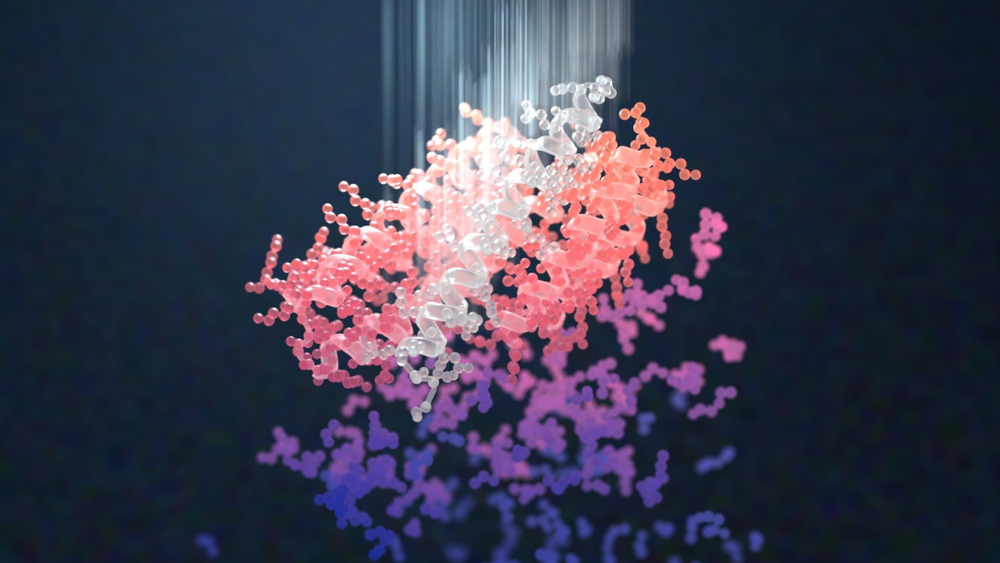
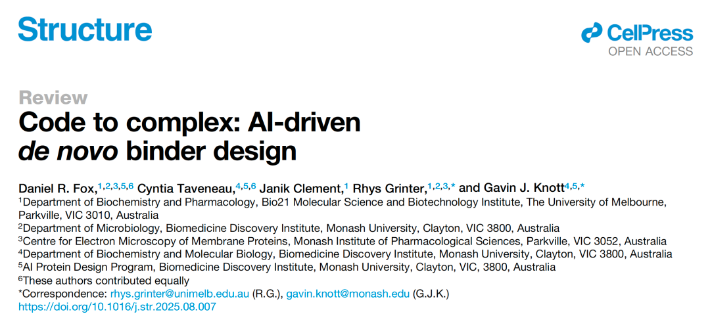
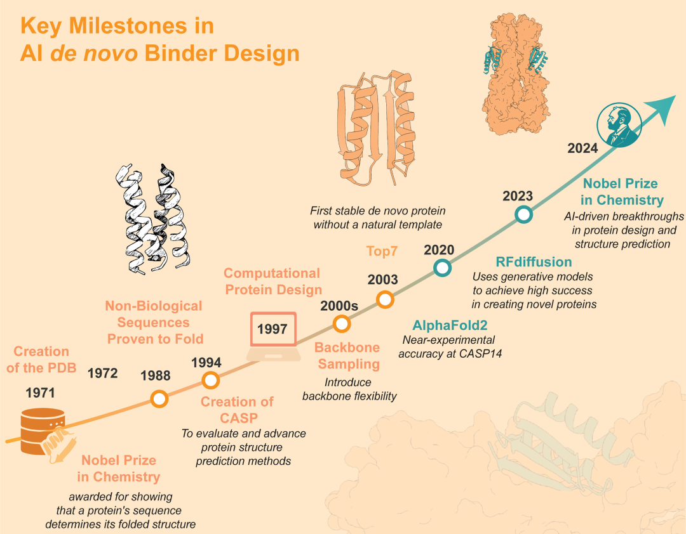
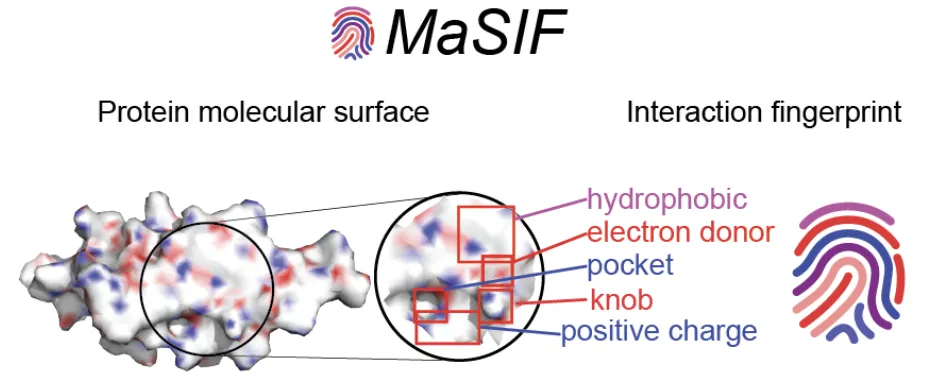
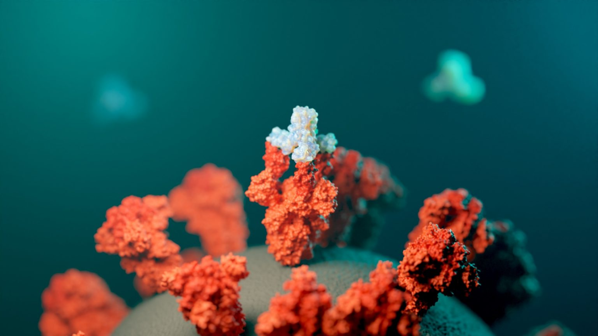
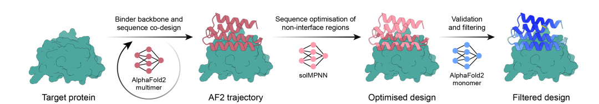
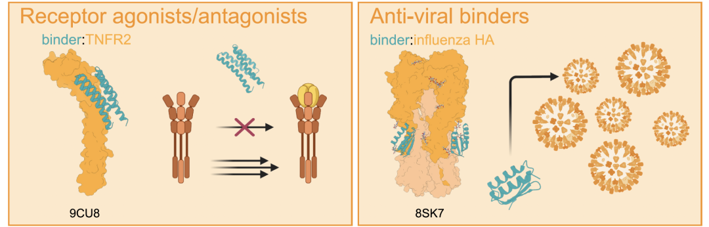
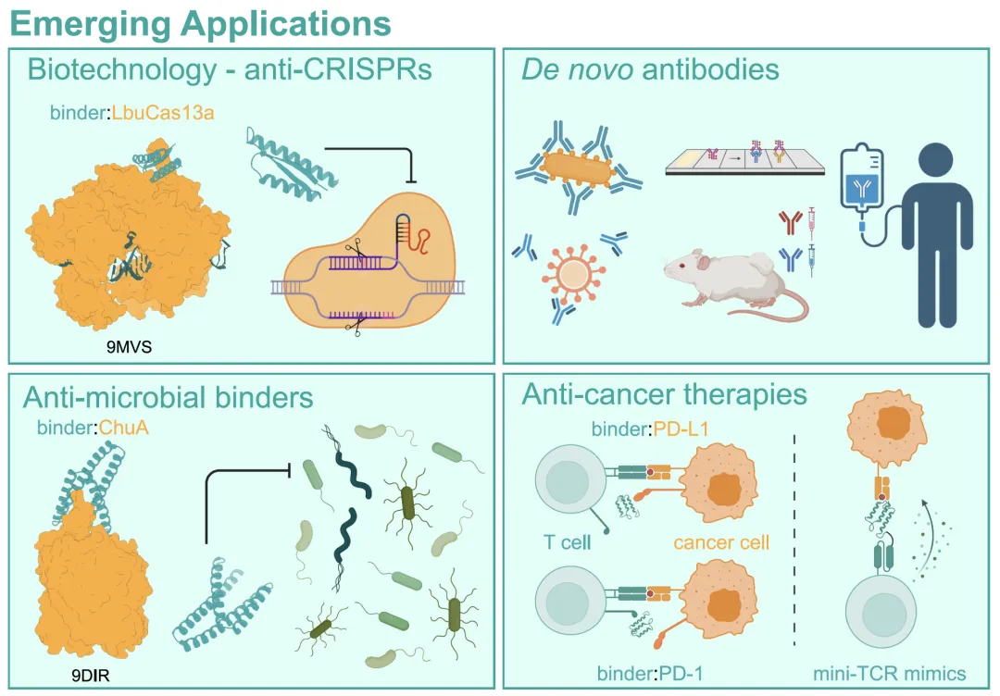
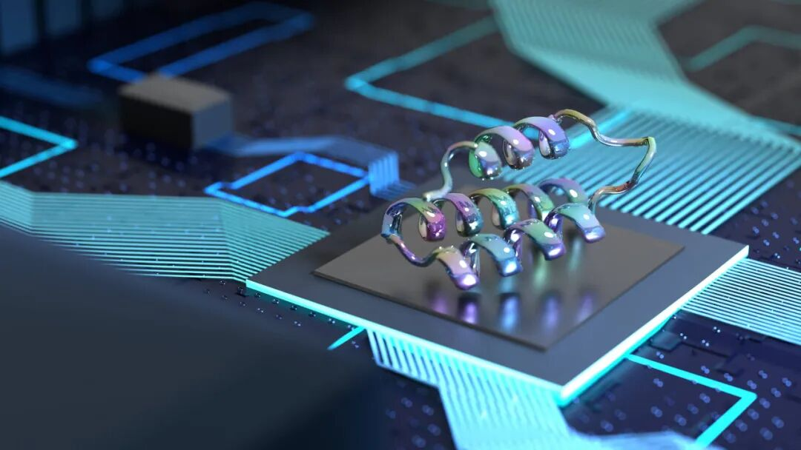

A Cell Review, and the Chronicle of AI-Driven De Novo Binder Design
Contents
"'Code to Complex' works two ways. Code is both computer code and the code of life spelled out in a protein sequence, and the title captures the essence of the change: we are moving from reading and writing the genetic code to writing functional modules of life."
If you were a programmer, how would you "code" a protein?
This is not a privilege reserved for the creators of Greek myth. It is happening now. Over the past few years AI has learned not only to predict how proteins fold but to design proteins that nature has never made: proteins that bind a virus precisely, neutralize a toxin, or tune the immune system. All of it comes from a quiet computational revolution.
On September 1, 2025, Cell's Structure published the review Code to complex: AI-driven de novo binder design. Having read it, I would call it a high-quality entry point to AI binder design: a precise and generous map of how AI drives de novo protein design from theory toward therapeutics. We want to design not only structures but functions; not only imitate nature but begin to surpass it. So let us follow the review's own thread through forty years of protein design.

01 — Introduction
The original paper: Code to complex: AI-driven de novo binder design, Structure, Cell Press, open access.

02 — Milestones: from rational design to generative AI
The review's main figure condenses the milestones of de novo binder design. Looking back, the history of protein design reads like an evolution from experience toward automation.

- As early as 1988, DeGrado and co-workers built the first successful artificial four-helix bundle by rational design. What they relied on was a deep understanding of how hydrophobic cores and polar residues should be arranged, what you might call the first principles of proteins. The achievement was modest in size but proved a fundamental proposition: humans really can design proteins from scratch.
- In the 21st century, computational methods made design systematic. In 2003, the Baker lab's TOP7 became a milestone: the first de novo protein generated entirely by computation, with no natural template, that folded stably. The method was physical energy function optimisation with Monte Carlo sampling. From then on protein design was no longer only an art of structure; it became a science you could compute and optimise.
"Baker's legendary road as the hand of God begins here, and protein design formally enters the computable stage. (PS: your author was born right about then.)"
- Over the following decade researchers aimed at harder functional design: binders against the conserved region of influenza hemagglutinin, screened at high throughput with yeast display. But those methods still leaned heavily on expert intuition, with limited success rates and poor generality.
- The real turning point came in 2020: AlphaFold2 arrived and reached near-experimental accuracy in the 14th Critical Assessment of protein Structure Prediction (CASP14). Predictions were astonishing, but more importantly the deep learning architecture underneath became the foundation for generative design models. Suddenly AI could not only predict protein structures; it could create them.
"DeepMind pushed AI prediction so close to experiment that CASP14 conceded the single-chain structure prediction problem was largely solved, which set off an industrial revolution in protein prediction and design."
- In the last two years a series of tools — RFdiffusion, ProteinMPNN, BindCraft — raised design success rates by one to two orders of magnitude. Today a researcher can generate a few dozen candidates in silico and expect a decent chance of a high-affinity, high-specificity binder. Protein design has entered its automation era.
03 — The AI toolbox: how the main strategies work
Despite the proliferation of tools, the review groups current design strategies into four classes, each a different design philosophy.
Hallucination grew out of the trRosetta framework. The idea is neat: invert the structure prediction network. A model built to go from sequence to structure is repurposed to generate new foldable backbones from random noise. Because it depends on no existing template, it greatly widens the range of designable structures.
MaSIF (molecular surface interaction fingerprints) takes a more visual approach. Instead of starting from global structure, it analyses the chemical and geometric features of protein surfaces to find patches likely to interact. Once such a patch is found on a target, MaSIF can search for or design a complementary surface for precise docking. This suits targets with no obvious active site, which classical methods handle poorly. It has produced binders against the SARS-CoV-2 spike protein and PD-L1.


RFdiffusion + ProteinMPNN is the popular current workflow. RFdiffusion is a diffusion-based backbone generator: an architect sketching the overall three-dimensional shape. ProteinMPNN is the interior designer, assigning an amino acid sequence that folds stably and functions. AlphaFold2 then scores the result (pLDDT, pTM) and predicts how it binds the target. The success rate of this pipeline is high enough that many groups need only screen a few dozen designs to obtain a usable binder.
The newer BindCraft represents the next leap and was formally published in Nature days ago. It co-folds target and binder from the start, simulating their interaction in real time. That dynamic strategy handles the flexible conformational changes of a binding interface better, reaching 10–100% success on some difficult targets: precise design in one step.

04 — Bench to bedside: where designed proteins are already used
If AI protein design is a new scalpel, its applications are spreading quickly across biomedicine.
Against toxins: a new route to antivenom. Snake venom has long been a hard problem for antiserum therapy, which traditionally requires immunizing animals and extracting antibodies, an expensive and cumbersome process. The Baker lab used RFdiffusion against α-neurotoxins and cytotoxins to design a series of small binding proteins. They are extremely thermostable (some Tm above 95 °C) and reach nanomolar to picomolar affinity. Most striking: in animal models, dosing even 15 minutes after envenomation gave 100% survival. This may be the shape of future antitoxin therapy: no animal immunization, designed entirely in silico, able to respond quickly to new toxin variants.
"Note that the Baker lab did not design antivenom antibodies directly but de novo mini-binders. Antibodies are harder to design, and mini-binders are more stable and easier to produce at scale."
Precise control of the immune system. The complexity of immune signalling makes drug development a game of whack-a-mole. Conventional TNF-α inhibitors block both TNFR1 and TNFR2, even though TNFR2 is anti-inflammatory. With AI design, researchers obtained antagonists that target only TNFR1, avoiding that side effect. More neatly, by switching to a partial diffusion optimisation strategy, the same workflow yielded agonists for OX40 and 4-1BB that activate T cells and strengthen antitumour immunity. These designs beat natural ligands on activity and add small size, high stability and potential oral availability, giving immunotherapy a new toolbox.

Emerging frontiers: gene editing and antimicrobial resistance. Applications keep expanding. Anti-CRISPR proteins (Alcrs) give gene editing a brake, enabling finer spatiotemporal control. Antibacterial proteins designed against the heme-uptake systems of resistant bacteria offer a new angle on global antimicrobial resistance. AI has even produced high-affinity binders against intrinsically disordered protein regions (IDPs), long considered undruggable. Together these describe a future in which protein drugs are not limited to a handful of targets but can be tailored to a wide range of biological processes.

05 — Challenges: technical limits
Like every review, this one sets out the open problems.
Technical barriers and resource distribution. Running BindCraft, RFdiffusion and similar models efficiently needs serious GPU capacity, which not every non-computational lab or small company can afford. Successful design also requires a deep understanding of the target's structural biology, so teams need both computational and experimental expertise.
The gap between prediction and experiment. Metrics such as pLDDT and pAE_interaction correlate reasonably with experimental success, but far from perfectly. Some designs that look excellent in silico fail to fold, fail to stay soluble, or fail to bind. Closing that gap needs more high-quality experimental data feeding back into training; open databases such as the Protein Design Archive are helping.
Limited target scope. Most successes are still on relatively rigid, surface-exposed targets. Highly dynamic membrane proteins, glycosylated proteins and protein–nucleic acid complexes remain hard. Widening the range requires algorithms that handle flexibility, interfacial water and chemical modifications better.
06 — "Code to Complex": a new era for binder design
"Code to Complex" carries two meanings at once: code as computer code, and code as the code of life in a protein sequence. The title captures the essence of the change: we are moving from reading and writing the genetic code to writing functional modules of life.
What this review shows is not just a series of technical advances but the birth of a new paradigm. Protein design is turning from an art into an engineering discipline; from intuition and experience toward data and algorithms; from imitating nature to surpassing it.
Future protein design will be more precise, more general and more accessible. Perhaps soon, designing a binder against a newly emerged pathogen will be as simple as building a web page today: enter the target, choose the design parameters, press generate.
At that point we may truly realize Richard Feynman's line: "What I cannot create, I do not understand." AI is giving us that creative ability: not only to understand life, but to design it.

Originally published in Chinese on WeChat, September 5, 2025, as Cell子刊综述 | AI结合蛋白从头设计“编年史”.
English version by Yitian Xiao; figures carried over from the Chinese original. Corrections are welcome via an issue.